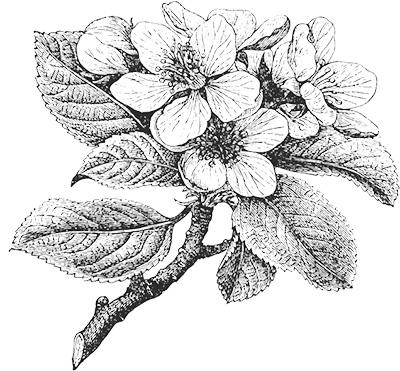
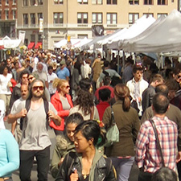

Frozen Food
- Mint chip ice cream
- Vanilla ice cream
- Peas
- Chopped spinach
Shelf staples
- Dry mango
- Penne rigate
- Spicy salsa
- Gnocchi
- Roasted almonds

Union Square Farmer's Market
Dairy
- 1 lb. Mozarella
- Milk
- Dozen brown eggs
Produce
- 5 lb. Pink lady apples
- Tuscan kale
- Basil
- Tomatoes
- Brocolli
